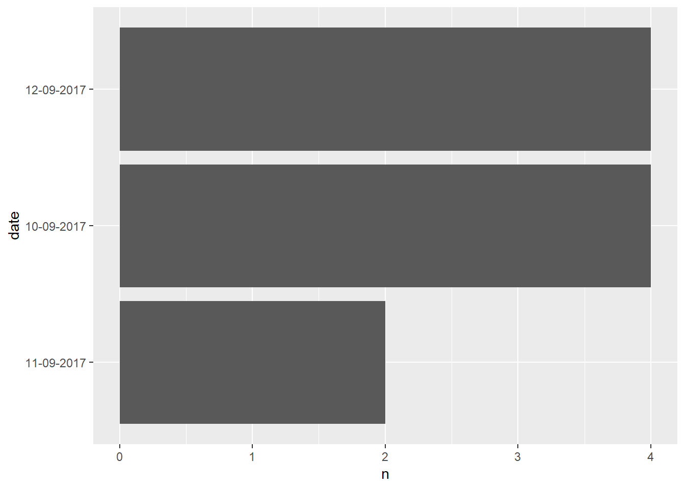

Chapter 1 R language
1.1 R conference 2018
by Emily Robinson (DataCamp) at the 2018 New York R Conference Les packages de l’écosystème tidyverse sont décrits dans le diagramme 1. Noter que leaflet ne fait pas partie de tidyverse.
library(tidyverse)
tidyverse_packages()## [1] "broom" "cli" "crayon" "dplyr" "dbplyr"
## [6] "forcats" "ggplot2" "haven" "hms" "httr"
## [11] "jsonlite" "lubridate" "magrittr" "modelr" "purrr"
## [16] "readr" "readxl\n(>=" "reprex" "rlang" "rstudioapi"
## [21] "rvest" "stringr" "tibble" "tidyr" "xml2"
## [26] "tidyverse"data anlysis workflow (draw.io)
1.1.1 make a toy dataset
library(tibble)
df <- tribble(
~date, ~whatever, ~numstuff1, ~numstuff2, ~multi_value,
"10-09-2017", .1, 5, NA, "val1, val2, val3",
"10-09-2017", .5, 1, 3, "val1",
"11-09-2017", .2, 3, 2, "val1, val2",
"12-09-2017", .5, Inf, 3, "val1, val2, val3, val4"
)
df## # A tibble: 4 x 5
## date whatever numstuff1 numstuff2 multi_value
## <chr> <dbl> <dbl> <dbl> <chr>
## 1 10-09-2017 0.1 5 NA val1, val2, val3
## 2 10-09-2017 0.5 1 3 val1
## 3 11-09-2017 0.2 3 2 val1, val2
## 4 12-09-2017 0.5 Inf 3 val1, val2, val3, val4Examine your NAs and empty values
library(purrr)
df %>%
purrr::map_df(~sum(is.na(.))) # count the NA for every columns of a DF## # A tibble: 1 x 5
## date whatever numstuff1 numstuff2 multi_value
## <int> <int> <int> <int> <int>
## 1 0 0 0 1 0library(dplyr)
df <- df %>%
na_if(Inf) # convert empty values into NA values
df## # A tibble: 4 x 5
## date whatever numstuff1 numstuff2 multi_value
## <chr> <dbl> <dbl> <dbl> <chr>
## 1 10-09-2017 0.1 5 NA val1, val2, val3
## 2 10-09-2017 0.5 1 3 val1
## 3 11-09-2017 0.2 3 2 val1, val2
## 4 12-09-2017 0.5 NA 3 val1, val2, val3, val41.1.2 Examine your numeric columns
library(skimr)
df %>%
select_if(is.numeric) %>%
skimr::skim() # summary of all the numeric columns## Skim summary statistics
## n obs: 4
## n variables: 3
##
## -- Variable type:numeric ----------------------------------------------------------
## variable missing complete n mean sd p0 p25 p50 p75 p100 hist
## numstuff1 1 3 4 3 2 1 2 3 4 5 <U+2587><U+2581><U+2581><U+2587><U+2581><U+2581><U+2581><U+2587>
## numstuff2 1 3 4 2.67 0.58 2 2.5 3 3 3 <U+2583><U+2581><U+2581><U+2581><U+2581><U+2581><U+2581><U+2587>
## whatever 0 4 4 0.32 0.21 0.1 0.18 0.35 0.5 0.5 <U+2583><U+2583><U+2581><U+2581><U+2581><U+2581><U+2581><U+2587>1.1.3 Tidy columns containing colon separated values
library(tidyr)
library(stringr)
df <- df %>%
mutate(colonne = str_split(multi_value, ",")) %>% # transform into a list of characters
unnest() # split into seperate observations1.1.4 plot uncluttered bar charts
library(ggplot2)
library(forcats)
df %>%
count(date) %>%
mutate(date = fct_reorder(date, n)) %>% # ordonne les colonnes en ordre décroissant
ggplot(aes(x = date, y = n)) + geom_col() + coord_flip()
1.2 Sams Teach Yourself R
By Andy Nicholls, Richard Pugh, & Aimee Gott (first edition dec 2015) object types
4 modes (fonction mode()):
- numeric
- character
- boolean
- complex
3 types (fonction class()):
- vector (c’est le type de base) - attributes length et names
- matrix/array - attribut dim
- list
1.2.1 cut et split
cut est utilisé pour classer des données numériques en facteur
numeric_matrix <- 1:100
mycut1 <- cut(numeric_matrix, 3) # classifie les données selon trois classes de valeurs égales
head(mycut1)## [1] (0.901,34] (0.901,34] (0.901,34] (0.901,34] (0.901,34] (0.901,34]
## Levels: (0.901,34] (34,67] (67,100]table(mycut1)## mycut1
## (0.901,34] (34,67] (67,100]
## 34 33 33On peut aussi couper selon des classes numériques spécifiques
mycut2 <- cut(numeric_matrix, breaks = c(1, 10, 100), include.lowest = TRUE) # classes [1, 10], ]10, 100]
head(mycut2)## [1] [1,10] [1,10] [1,10] [1,10] [1,10] [1,10]
## Levels: [1,10] (10,100]table(mycut2)## mycut2
## [1,10] (10,100]
## 10 90La fonction split permet de découper un ensemble selon des facteurs. Donc on peut combiner les fonctions cut et split pour décomposer un vecteur ou DF en liste de vecteurs/DF groupées par facteur.
mysplit_list <- split(numeric_matrix, mycut2)la fonction split fonctionne aussi sur des DF
df <- data.frame(value = sample(1:1000, size = 100), whatever = LETTERS[sample(1:length(LETTERS), size = 100, replace=TRUE)])
split(df, cut(df$value, 3))## $`(7.01,339]`
## value whatever
## 2 255 Y
## 5 310 X
## 6 274 E
## 9 182 T
## 16 283 A
## 18 208 W
## 26 8 Q
## 31 69 W
## 32 188 L
## 34 285 Y
## 35 55 M
## 36 45 K
## 37 306 Z
## 40 65 A
## 43 103 H
## 44 125 I
## 46 234 K
## 52 14 Y
## 54 71 S
## 57 99 K
## 60 21 G
## 66 296 D
## 68 176 G
## 69 170 V
## 71 57 O
## 76 335 I
## 82 200 W
## 84 68 N
## 86 59 P
## 87 100 C
## 88 185 H
## 91 89 K
## 92 11 N
## 96 268 M
## 100 63 C
##
## $`(339,669]`
## value whatever
## 1 512 N
## 4 669 K
## 7 412 R
## 12 593 F
## 17 467 D
## 20 435 A
## 23 352 H
## 24 339 V
## 27 577 S
## 29 664 F
## 30 646 P
## 39 553 V
## 47 617 G
## 49 571 A
## 55 456 M
## 56 369 S
## 59 661 N
## 63 592 D
## 65 652 T
## 72 645 E
## 77 575 O
## 78 413 F
## 81 472 V
## 83 432 F
## 85 598 C
## 90 510 F
## 95 551 Z
## 98 499 K
##
## $`(669,1e+03]`
## value whatever
## 3 937 A
## 8 805 P
## 10 811 A
## 11 711 P
## 13 1000 D
## 14 974 Y
## 15 917 V
## 19 782 P
## 21 900 R
## 22 913 G
## 25 978 D
## 28 705 D
## 33 976 P
## 38 723 Q
## 41 942 O
## 42 732 A
## 45 987 C
## 48 674 Z
## 50 721 K
## 51 983 O
## 53 794 T
## 58 710 U
## 61 877 U
## 62 848 A
## 64 908 W
## 67 783 O
## 70 730 H
## 73 726 G
## 74 969 L
## 75 874 U
## 79 952 P
## 80 970 E
## 89 881 T
## 93 719 Z
## 94 745 X
## 97 670 S
## 99 941 U1.3 Advanced R
The book Advanced R explains a lot of fundamental aspects of the R language.
The library lobstr allows to check the size of a variable
library(lobstr)
obj_size(1)## 56 BMain object types
t1 <- c(1:5)show_type(t1)## [1] 1 2 3 4 5
## [1] "integer"
## int [1:5] 1 2 3 4 5t2 <- c(1.1, 1e2)
show_type(t2)## [1] 1.1 100.0
## [1] "double"
## num [1:2] 1.1 100t3 <- c("dog", "cat")
show_type(t3)## [1] "dog" "cat"
## [1] "character"
## chr [1:2] "dog" "cat"t4 <- c(TRUE, FALSE)
show_type(t4)## [1] TRUE FALSE
## [1] "logical"
## logi [1:2] TRUE FALSEt5 <- list(1:2, 2:3)
show_type(t5)## [[1]]
## [1] 1 2
##
## [[2]]
## [1] 2 3
##
## [1] "list"
## List of 2
## $ : int [1:2] 1 2
## $ : int [1:2] 2 3t6 <- data.frame(col1 = c(1:5), col2 = letters[1:5])
show_type(t6)## col1 col2
## 1 1 a
## 2 2 b
## 3 3 c
## 4 4 d
## 5 5 e
## [1] "list"
## 'data.frame': 5 obs. of 2 variables:
## $ col1: int 1 2 3 4 5
## $ col2: Factor w/ 5 levels "a","b","c","d",..: 1 2 3 4 5